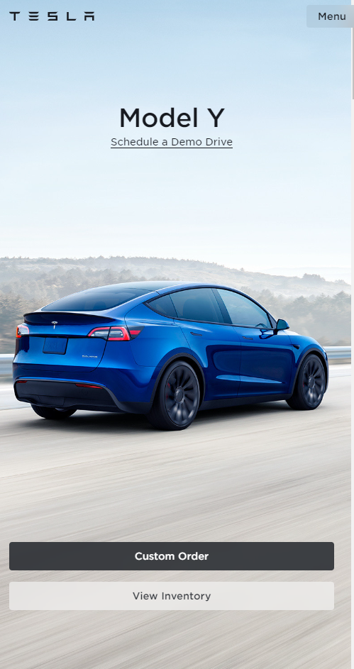
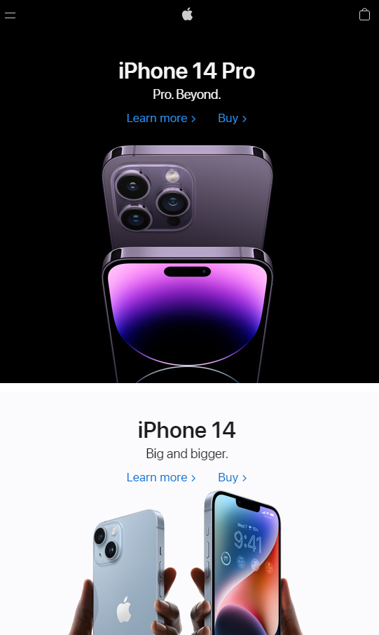

Emphasis and Contrast
Tesla
tesla.com
This home page for Tesla is a great example of Emphasis and Contrast. The first thing your eyes are drawn to on this page is the beautiful, blue, model Y. Tesla purposely uses the light grey shades surrounding the car to create a contrast between the backgorund and the car. This contrast creates en emphasis on the beauty of the car, which is obvioulsy what they want you focusing on.
Proportion
Apple
apple.com
The home page for apple is a great example of proportion. We learn from the design principle of proportion that making something bigger or smaller in terms of its proportion to the page can help show what is important. Apple's newest (and most expensive) product is the new iPhone 14 Pro. By making the image of the phone muh bigger than other parts of the page, Apple draws the users attention to their new product.
Consistency
Zoom
zoom.comZoom is a very popular example of the consistency design principle. There is a reason that millions of people turned to Zoom when COVID-19 became a problem, it is easy to use. The UI for Zoom is extremely consistent. Whether you are on a mobile phone, tablet, or desktop, the interface and tools are generally the same. This Consistency is what allowed zoom to grow so quickly in a time of need.